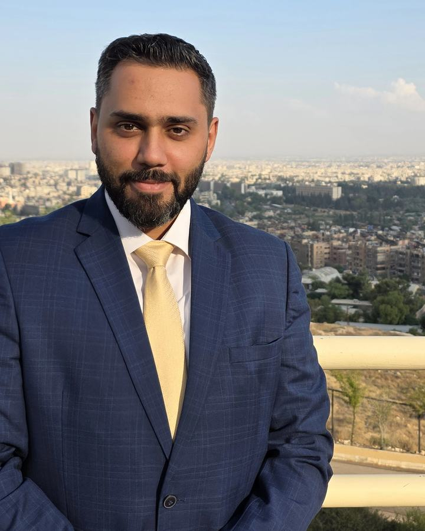

Faculty of Humanities · Homs University, Syria
Dr. Sari Hamoud
د. ساري حمود
Full-time, tenure-track lecturer in linguistics at Homs University.
I do not just teach English grammar to undergraduate English Literature students. I help them build learning habits that make them skilled at having actual English converstations. I combine modern tech with available resources (their smart phones with AI) to empower their learning journey. My PhD in Psycholinguistics is from Jawaharlal Nehru University, and my research looks at sentence comprehension, working memory and multilingualism.
